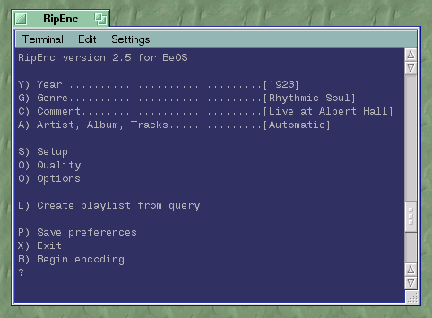
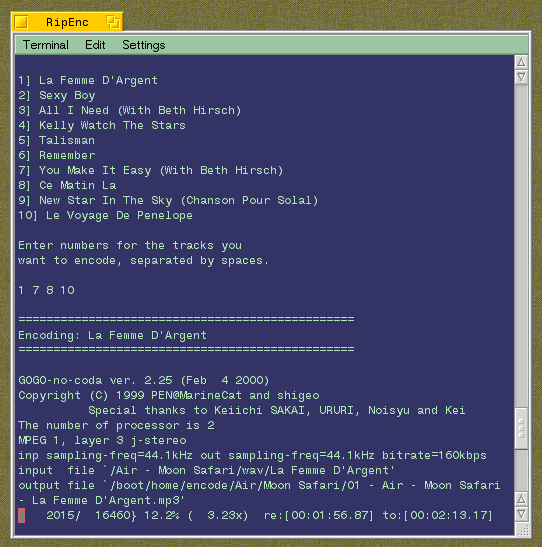

RipEnc: Usage
Before you begin encoding, make sure cddblinkd is running and that you've mounted an audio CD by right-clicking the Desktop and choosing "Audio CD" from the Mount menu. cddblinkd will detect that you've mounted a CD, look it up in a compact disc database, and the CD's volume name will change to reflect the artist and album name. When it does, you're ready to run RipEnc.The RipEnc launcher icon can be renamed to anything you like and placed wherever you like (the installer places it on the Desktop). You can also run RipEnc by typing ripenc into any Terminal window. You should see something like this:

Year, Genre and Comment fields are not retrieved automatically from compact disc databases and must be entered manually if you want an accurate and useful MP3 database. These fields must not be empty; if you don't enter a year, zero will be used (unless it's reading year settings from a previously saved RipEnc session). The Genre list is derived from the Unix id3ren command, which uses the official ID3v1 specification (see the bottom of http://www.id3.org/id3v2.3.0.txt). Genre will default to Blues if you don't pick one. To modify the genre list, you'll need to download the id3ren source, edit genre.h, and recompile (just type "make" in the src directory), but note that you'll no longer be using the "standard" genres (not that it matters). The Comment field is totally optional, but will default to "_" if you don't enter something here.
Note that there is no longer a hand-naming mode. If you want to do hand-naming of your tracks, just open the WAV folder on the CD and name your tracks there. It's easier, your changes will be saved for future uses of that CD, and it keeps RipEnc simpler.
Setup
Items in the Setup section generally only need to be done once and are for configuring preferences you won't use very often. The most important thing here is to configure RipEnc to recognize your CD-ROM drive. Press "D" and RipEnc will detect all attached CD-ROM drives. Select one from the list and RipEnc will look for CDs in that drive from now on. Tell RipEnc where you want your MP3s to go, and choose a filenaming convention from the menu. If you choose "Use MP3 folder template," you can create a custom layout for generated album folders (as pictured).BeOS MP3 players have historically used three different MIME types, so RipEnc lets you choose one (the default is safest). If you prefer that your MP3 files don't end with ".mp3", disable this option. BeOS will be fine, but other OSes will have problems identifying your files. The Query Volume option is used only if you intend to create query-based playlists.
The Encoder option is important. Most users will want to use gogo, as it's the fastest, and it's the only encoder able to use multiple processors effectively under BeOS. While slower, LAME is the preferred encoder of audiophiles (yes, gogo is based on LAME, but changes to LAME aren't always reflected in gogo, and LAME is getting faster all the time). If you don't have the right encoder installed, RipEnc will help you download it.
Quality
The Quality section lets you specify a bitrate, which is the most important factor in determining the quality-to-filesize ratio of your MP3 files. I recommend 160kbps for most purposes, and 192kbps if you have nice equipment and care about audiophile issues. If you want to create low-bandwidth files (e.g. for use on a streaming server), you can downsample the frequency to less than 44.1kHz.Leave the Method set to joint stereo unless you know what you're doing. Enable VBR options only if you're already familiar with Variable Bit Rate techniques. Zero is highest quality, 10 is lowest. If you want to learn more about these methods, buy my book MP3: The Definitive Guide from O'Reilly and Associates).
Tip: RipEnc also adds Bitrate and Frequency attributes to your files. If these do not appear in the Tracker for you, open "MPEG audio file" (audio/x-mpeg) in the FileTypes preferences panel and make sure you have attributes for Audio:Bitrate and Audio:Frequency.Options
The Options section is used for changing options likely to change more frequently. If you'd like to generate OGG files rather than MP3, make sure you have the Vorbis Tools from BeBits installed. If you want to see a naming convention not listed here, let me know and I'll add it. Playlists can optionally be saved automatically, but since they'll only be for one album at a time, I don't think this is very useful; it's just as easy to drag an album folder onto your MP3 player. If you set "Encode entire CD" to "n", you will be shown a list of tracks on that disc and be able to choose tracks by number. If "Play when done" is enabled, RipEnc will pass a playlist to the Tracker (which should automatically pass it to your preferred MP3 playlist handling application). If you run RipEnc over telnet, make sure the Alert options don't throw up an Alert box, or your session will hang until someone on the remote box clicks OK.Remember to press "P" on the main screen to save your preferences, so you don't have to set stuff up again in the future.
Press "B" to begin the encoding process.

Song names have been extracted from cdda-fs / cddblinkd. Four songs have been selected, and gogo has started encoding the first.
Tip: To stop encoding the current track, hit Ctrl-C once. To stop the script completely, hit Ctrl-C twice quickly.Notes on Compilation / Various Artists CDs
If you have a various artists or compilation CD, select this mode with option V in Options. Because most CDs are not compilations, and because encoding a normal CD in this mode can result in having your MP3s tagged incorrectly, RipEnc asks for confirmation every time you use it, to make sure you're not about to blow it.It's essential that your compilation CDs have tracks in the WAV folder named like this:
Track Name - Artist NameThey should come down from the compact disc databases that way. If they don't, you'll need to name them this way in the Tracker before encoding, or errors will occur.Query-based playlist generator
This tool lets you query your filesystem for MP3s matching specific criteria. Query results can be saved to playlists for future use.In this version, only era and genre searches are supported. More will come in the future. Note that you can also do this from the Tracker -- just drag Tracker's query results into your MP3 player and save the playlist from there.
Remember, you must have MP3 filesystem indexes for each volume you intend to query. Be sure to set the query volume in Setup.